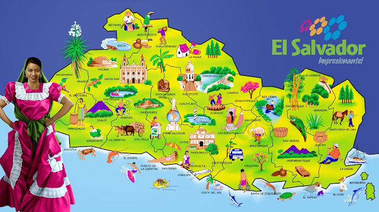

El Salvador, el país más pequeño de Centroamérica, ofrece una gran variedad de atractivos turísticos en poco territorio. En la Ruta de las Flores se encuentran pueblos coloniales como Juayúa, Apaneca y Ataco, famosos por sus cafetales, murales y ferias gastronómicas de fin de semana. En el occidente destacan el Lago de Coatepeque, de aguas azul turquesa dentro de una caldera volcánica, y el parque arqueológico Tazumal, uno de los sitios mayas más importantes del país. La Costa del Bálsamo, conocida como Surf City, atrae a surfistas de todo el mundo a playas como El Tunco y a lo largo del Puerto de La Libertad, mientras que el oriente ofrece playas tranquilas como El Cuco y Las Tunas, sobre el Golfo de Fonseca. En el norte, Suchitoto conserva su encanto colonial con calles empedradas, arte y miradores hacia el lago Suchitlán, además de la cascada Los Tercios. La Ruta de la Paz, en Morazán, con Perquín y su Museo de la Revolución, permite conocer la historia reciente del país en un entorno de montaña. Por último, San Salvador reúne su Centro Histórico, con la Catedral Metropolitana y el Teatro Nacional, y a pocos minutos está el volcán de San Salvador con su cráter El Boquerón. Todo esto, sumado a su gastronomía (pupusas, mariscos y café de altura), su clima cálido y la cercanía entre destinos, hace posible conocer playas, volcanes, lagos, cultura e historia en un solo viaje.